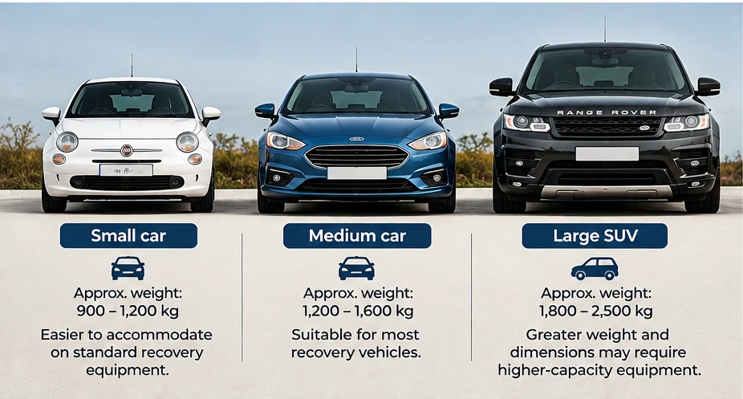

Broken down in Peterborough, stranded near the A1 or arranging transport for a non-running car? This guide explains what published recovery prices actually mean and why the final cost depends on the job.
How Much Does Car Recovery Cost in Peterborough?
Some recovery operators serving Peterborough publish starting or minimum charges below £100. That does not mean every recovery costs less than £100: the final quotation can depend on distance, vehicle type, weight, access and collection time.
There is no verified published average invoice price for vehicle recovery in Peterborough. The figures below are advertised prices from selected operators, not a survey of completed jobs or guaranteed quotations.
Published Recovery Prices from Peterborough Operators
| Operator | Advertised price | Important qualification |
|---|---|---|
| MIDO’s Recovery | £50 minimum; £2 per mile | Mileage-based formula; confirm what is included and any surcharge. |
| Tow Away Recoveries | £49.99–£79.99 call-out; £2.50–£4.20 per mile | Published listing ranges, not a single fixed job price. |
| Ryan’s Transport Services | From £70 | Advertised starting price; obtain a route-specific quote. |
Pricing note: The figures are not directly comparable: minimum fees, call-out fees and starting recovery prices may cover different services. Check the linked operator pages for current prices.
Prominent local and national operators do not necessarily publish a standard price list. The AA, RAC and Green Flag mainly advertise breakdown-cover products, which are not equivalent to a one-off private recovery quote.
What Is Included in a Recovery Quote?
Ask whether your quotation covers attendance, loading, transport to the destination, unloading and applicable taxes. Depending on the operator and job, extra costs can relate to mileage, waiting, difficult access, winching, specialist loading or storage.
Chargeable mileage is especially important: some operators may count more than just the distance from the pickup address to the delivery address. Ask where mileage starts and ends.
Why Vehicle Size and Weight Affect Recovery Costs
A small hatchback, medium family car and large SUV can need different recovery arrangements. The operator must assess the vehicle’s actual weight, dimensions, condition and the truck’s safe and legal carrying capacity.

| Vehicle type | Examples | What may affect the quote |
|---|---|---|
| Small car | Fiat 500, Ford Fiesta | Often lighter and easier to accommodate on a suitable transporter. |
| Medium car | Ford Focus, VW Golf | Actual mass, wheelbase and loading condition still matter. |
| Large car / SUV | BMW X5, Volvo XC90 | Greater mass or dimensions may require higher-capacity equipment. |
| Large or loaded van | Ford Transit, Mercedes Sprinter | Gross weight, payload, height and length may require specialist arrangements. |
DVSA guidance explains that recovery vehicles must comply with permitted gross weight and axle-weight limits. A vehicle cannot be carried legally simply because it fits on the bed. The recovery truck’s available payload is also affected by the truck itself, fuel, equipment and occupants.
There is no universal fixed SUV surcharge: the price may change when a heavier or larger vehicle changes the equipment, time or work needed.
How Much Does Recovery Cost Per Mile?
MIDO’s Recovery advertises a £50 minimum and a rate of £2 per mile. Applying those figures produces the following illustrative calculations — not actual quotations:
| Chargeable distance | Calculation | Illustrative amount |
|---|---|---|
| 10 miles | Minimum charge | £50 |
| 25 miles | 25 × £2 | £50 |
| 50 miles | 50 × £2 | £100 |
| 100 miles | 100 × £2 | £200 |
Actual quotations may include additional costs and depend on the operator’s definition of chargeable distance. These are not ResQ Direct prices.
Do Night-Time, Weekend and Bank-Holiday Recoveries Cost More?
They can. Some operators charge extra for late-night, Sunday or bank-holiday jobs; others advertise the same basic rate at different times. There is no universal UK out-of-hours surcharge.
MIDO’s Recovery indicates that late-night surcharges may apply in some circumstances, without publishing a single fixed amount.
For a specific comparison, London operator Priority Assist publishes these standard and out-of-hours rates:
| Service | Standard | Night tariff |
|---|---|---|
| Local recovery, first 10 miles | £150 | £195 |
| Roadside attendance | £85 | £120 |
| EV flatbed recovery, first 10 miles | £225 | £280 |
For this operator, standard local recovery rises by £45 (30%). Its published night tariff applies 10 pm–8 am and also on Sundays and bank holidays. These are one London company’s rates, not a Peterborough or national average.
Peterborough vs London: Are Recovery Prices Different?
Selected advertised starting prices in Peterborough are lower than the published local recovery tariff of the London operator above. However, these are not like-for-like quotations for identical journeys.
London recoveries may involve congestion, parking restrictions, restricted access, applicable road-user charges and longer attendance times. Some of these can affect the final quote. Equally, a difficult recovery in Peterborough can cost more than a straightforward London job.
Compare the total price for the same vehicle, route, time and loading requirements, rather than comparing headline prices alone.
Recovery Costs Around Peterborough and Cambridgeshire
Common quote requests include journeys between Peterborough, Yaxley, Whittlesey, Stamford, Huntingdon and Cambridge, as well as longer-distance transport to London.
We do not publish fixed prices for these routes because the exact pickup and destination addresses, vehicle weight, whether it rolls and steers, and the time of collection can change the job. Even a short journey can attract a minimum call-out charge.
Breakdowns on the A1, A47 and A15
Recovering a vehicle from a major road is different from collecting it from a driveway. The exact location, safe access, traffic conditions and required recovery arrangements matter.
Follow National Highways’ breakdown safety advice. If you are in immediate danger, call 999. Never attempt to arrange vehicle loading in an unsafe live-traffic location.
When contacting an operator, provide your road and direction of travel, precise location, vehicle details, whether the vehicle is in a live lane and the required destination.
Does a Non-Running Vehicle Cost More?
Not necessarily. A vehicle that will not start but rolls and steers may be straightforward to load. Locked wheels, seized brakes, a gearbox stuck in park, accident damage or restricted access can require additional equipment or time.
Tell the operator about these conditions before receiving a quote. See our guide: Can a Non-Running Car Be Transported?
Private Recovery vs Breakdown Cover
AA, RAC and Green Flag membership products typically provide specified breakdown benefits under policy terms, rather than a fixed one-off transport service. Basic cover may not include recovery to any UK destination.
Private recovery is normally quoted for a particular incident or planned vehicle movement. Compare the relevant benefits and total cost rather than treating monthly subscription prices as one-off recovery fees.
How to Avoid Unexpected Recovery Charges
Before booking, confirm the full quote, any minimum or call-out fee, how mileage is counted, whether weight or dimensions change the charge, out-of-hours rates, VAT where applicable, loading or winching costs, waiting/storage fees and the delivery address included.
Where practical, request the agreed quotation in writing and ask what circumstances could change it.
Frequently Asked Questions
How much is car recovery in Peterborough?
Selected operators advertise minimum or starting prices below £100, but the final quote depends on the vehicle, journey, time and loading requirements.
How much is recovery per mile?
Published rates vary. MIDO’s advertises £2 per mile subject to a £50 minimum; another local listing publishes a higher mileage range.
Is SUV or van recovery more expensive?
It can be if the weight, dimensions or load require different equipment or greater carrying capacity.
Is Sunday or night recovery more expensive?
Some operators apply out-of-hours tariffs; others do not. Confirm the total quote.
Do recovery companies charge to travel to me?
Some may factor attendance or additional mileage into the price. Ask how the chargeable distance is calculated.
Can I get a Peterborough-to-London quote?
Yes. Supply exact collection and destination locations, vehicle details, condition and preferred collection time.
Sources and Pricing Notes
Third-party advertised prices and guidance reviewed for this guide in October 2026; rates may change. Confirm current prices directly with each provider.
- MIDO’s Recovery — advertised pricing
- Tow Away Recoveries — Yell listing
- Ryan’s Transport Services — Peterborough
- Priority Assist — published standard and night tariffs
- DVSA — recovery vehicle safety and weight rules
- National Highways — breakdown safety
Published figures belong to the respective operators and are not ResQ Direct prices or guaranteed quotations.
Get a Vehicle Recovery Quote from ResQ Direct
ResQ Direct offers vehicle recovery around Peterborough and Cambridgeshire and planned vehicle transport across Great Britain. For a tailored quote, provide the make and model, collection and delivery postcodes, whether the vehicle starts, rolls and steers, any damage or loading difficulties, whether a van is loaded and your preferred collection time.
Contact ResQ Direct for a quotation →
Compare the full price for your exact job, not just an advertised starting price.